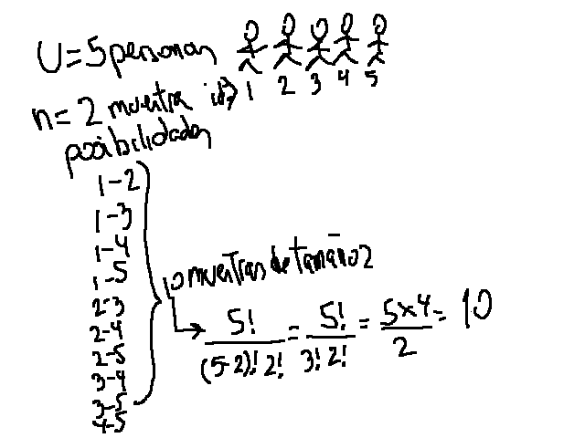
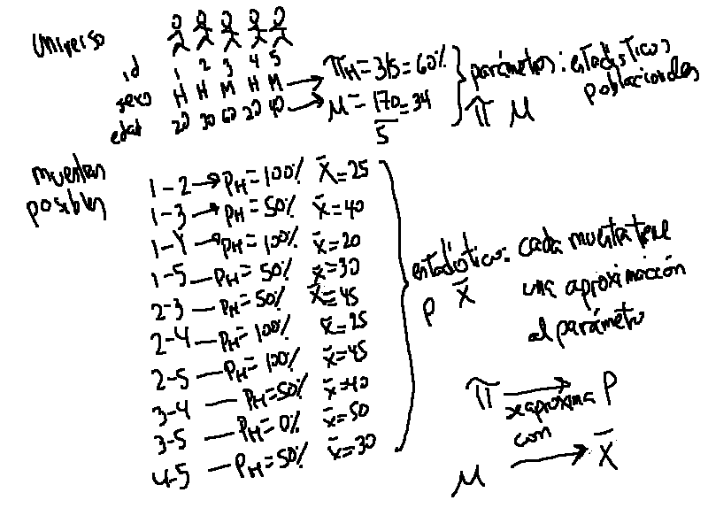

Clase 3 y Trabajo práctico LaLonde (1996)
Arturo Maldonado
13/4/2021
Estimación puntual
De una variable numérica, la medida de tendencia central más útil es la media. Por ejemplo, siguiendo con el ejemplo de LaLonde (1986), podemos calcular la media de ingresos antes y después de la intervención.
Primero leemos la base de datos.
library(rio)
LL <- import("https://raw.github.com/arturomaldonado/Estadistica_1.0/main/LL.csv")Y calculamos las medias en ambos años.
mean(LL$re74)## [1] 3630.738mean(LL$re78)## [1] 5454.636La manera de describir una variable categórica es a través de una tabla de frecuencias. Siguiendo con el artículo, se puede calcular la tabla de frecuencias de los individuos afroamericanos y de los latinos.
table(LL$black)##
## 0 1
## 144 578table(LL$hispanic)##
## 0 1
## 646 76El comando table nos ofrece las frecuencias absolutas. Para obtener los porcentajes (las frecuencias relativas) se puede anidar este comando dentro de prop.table.
prop.table(table(LL$black))*100##
## 0 1
## 19.9446 80.0554prop.table(table(LL$hispanic))*100##
## 0 1
## 89.47368 10.52632Se encuentra que los participantes del estudio son mayoritariamente afroamericanos y minoritariamente latinos.
En el caso de las tablas de frecuencias, se puede hallar la proporción (una forma de llamar a los porcentajes) de cada categoría de la variable. Esta muestra de individuos tendrá un 80.1% de afroamericanos y un 10.5% de latinos.
Tanto la media, como la proporción, son estimaciones puntuales, basados en los resultados de la muestra. Es decir, estas son estimaciones correspondientes a las 722 observaciones que son parte de este estudio. Sin embargo, esta muestra forma parte de un universo o población (el conjunto de individuos que carecen de habilidades laborales para insertarse en el mercado de trabajo), del que seguramente se quiere decir algo.
El proceso mediante el cual se parte de una muestra para decir algo de un universo o población es un proceso de inferencia y es parte de la estadística inferencial. La estadística inferencial introduce la incertidumbre en los estimados, debido al hecho de estar trabajando con una muestra y no con el total de observaciones del universo.
Un breve paseo por las probabilidades
Partimos del hecho que en el común de las investigaciones uno tiene que seleccionar un conjunto de observaciones que son parte del total, que es muy costoso e ineficiente hacer un estudio de la población completa. A esto le sumamos el otro hecho que nuestras herramientas de recojo de información son imperfectas. Un estudio transversal, por ejemplo, debería recoger información de los individuos en un corte en el tiempo, sin embargo, muchos estudios no son una “foto del momento” pues las observaciones toman tiempo y abarcan horas, días o semanas, sino meses.
Es por este motivo que para un estudio se selecciona “una” muestra, un conjunto de observaciones que son una fracción del total. Esta única muestra es solo una de las múltiples muestras teóricas que se podrían seleccionar de un universo determinado.
Partamos de un ejemplo muy simple. Para un universo de 5 personas, se pueden extraer 10 muestras de tamaño 2 diferentes.

La fórmula para calcular el número de muestras probables es la de combinatorias, que incluye el operador factorial. Si aplicamos esta fórmula a un ejemplo de un universo más grande, por ejemplo, un salón de clase de 47 alumnos, donde se quiere saber cuántas muestras diferentes de tamaño 4 se pueden extraer. Según la fórmula:
\[ \frac{47!} {(47-4)! 4!} = \frac{47!} {43! 4!} = \frac{47*46*45*44} {4*3*2} = 178365 \]
Para un sondeo de opinión, donde el universo son 20 millones de individuos y se quiere saber cuántas muestras diferentes de tamaño 1,500 se pueden extraer, este número de muestras es muuuuy grande.
Volviendo al ejemplo muy simple de 5 personas donde se quiere extraer una muestra de 2 y se quiere inferir los datos de la muestra de dos variables: sexo y edad.
Se tiene un universo de 5 individuos, cada uno con su sexo y edad. En la población la proporción de hombres es de 60% y la media de edad es de 34 años.

Si queremos extraer una muestra de tamaño de 2 de ese universo, se tienen 10 posibles muestras, cada una tendrá una aproximación de la proporción de hombres y de la media de edad. Dependiendo de qué muestra de todas las posibles sea la que se observa, los estadísticos serán una aproximación de los parámetros poblacionales.
En el caso de la proporción de hombres, se puede tabular los resultados de cada muestra probable.
| Resultados muestrales | Número de muestras que arrojaron ese resultado | Frecuencia |
|---|---|---|
| 0% | 1 | X |
| 50% | 5 | XXXXX |
| 100% | 4 | XXXX |
Incluso se podría calcular un promedio de todas esas proporciones muestrales (100+50+100+…+50/10), y ese resultado sería 65%, un resultado algo cerca de la proporción poblacional de 60%.
Este mismo procedimiento se podría hacer para todas las 178,365 muestras probables de tamaño 4 de un universo de 47 alumnos. Cada uno de los 47 alumnos será hombre o mujer y la proporción poblacional de hombres se puede calcular en ese total. A su vez, cada muestra de 4, tendrá una proporción muestral que tendrá valores (0 si no hay ningún hombre, 25% si hay 1 hombre, 50% si hay 2 hombres, 75% si hay 3 hombres y 100% si todos son hombres). Finalmente, se puede contar cuántas de las 178,365 muestras probables tuvieron 0%, 25%, 50%, 75% y 100% de hombres. Esta distribución se llama “distribución de muestreo.”
Si quisiéramos ampliar el tamaño de muestra a 10, entonces los resultados posibles serían, 0, 10, 20, 30, 40, 50, 60, 70, 80, 90 y 100%. También podríamos contar cuántas muestras tienen estos resultados.
De un universo más grande, se puede plantear extraer muestras de tamaño más grande. Por ejemplo, teóricamente se puede pensar que de un universo de 20 millones, se pueden extraer casi infinitas muestras de tamaño 1,500. Cada una de estas muestras tendrá un estadístico que será una aproximación del parámetro. Los estadísticos de todas estas casi infinitas muestras se pueden tabular y graficar.
Teorema del límite central
Este teorema muestra que la distribución de muestreo se aproxima a una distribución normal, con centro en el parámetro, en la medida que el tamaño de muestra aumenta.
Por lo tanto, la distribución de muestreo de N grandes seguirá las características de cualquier curva normal. Toda curva normal es simétrica y sabemos que si desde el centro se desplaza 1 desviación estándar en ambas direcciones, entre esos límites estarán el 68.3% de todas las observaciones. Si se desplaza 2 desviaciones estándar en ambas direcciones, se acumularían el 95.4% de todas las observaciones. Con 3 desviaciones estándar hacia ambos lados, se acumularía el 99.7% de todas las observaciones.

Traduciendo a la distribución de muestreo, la idea es que si se tabulan y se hace un gráfico de barras de los resultados de todas las muestras probables, se tendría una curva normal con centro en el parámetro. Sabríamos que si desde ese centro nos desplazamos 2 desviaciones estándar en ambas direcciones, entre esos límites estarían el 95% de todas las muestra probables.
Estimación de intervalo
La distribución de muestreo es teórica, muy difícilmente se puede calcular en la realidad. Regularmente tampoco sabemos los datos del universo. Lo que tenemos a mano es 1 muestra observada. Es decir, en un estudio de las muuuuuchas muestras probables, se selecciona 1 muestra.
En el caso de LaLonde (1986), por ejemplo, del universo de desempleados sin habilidades laborales, se seleccionó 1 muestra de 722 observaciones, de las muuuuchas muestras de 722 individuos de la población total.
Si teóricamente sabemos que en la distribución muestral, el 95% de todas las muestras están a +/- 2 desviaciones estándar1 del centro, que coincide con el parámetro poblacional, es muy probable que la única muestra que se ha observado sea parte de ese conjunto. De hecho, se puede decir que se tiene 95% de probabilidades de que sea parte de ese grupo.
Por lo tanto, si a partir del estadístico muestral, se aplica esta distancia de +/- 2 errores estándar, se tiene 95% de probabilidades que entre esos límites se incluya al valor del parámetro. Para verlo de manera más visual, en la siguiente figura se tiene la distribución de muestreo teórica (y desconocida), donde se marca la región que acumula el 95% de todas las muestras probables.
Más abajo se marca los resultados de 2 muestras probables. La primera proporción muestral subestima la proporción poblacional. La segunda, por el contrario, sobreestima la proporción poblacional. En el primer caso, si a partir del estadístico muestral se aplica +/- 1.96 errores estándar (línea horizontal en negrita), se observa que el parámetro poblacional está incluido en esos límites.
Es probable, como en el segundo caso, que otra muestra probable, cuando se le aplique el intervalo de +/- 1.96 errores estándar, no incluya al parámetro. Se observa que la línea en negrita no incluye la linea vertical entrecortada que marca el valor del parámetro poblacional.

Sin embargo, sabemos que es mucho más probable (95% de probabilidades) que si mi muestra es parte del 95% de muestras alrededor del parámetro, este intervalo incluya al parámetro poblacional. A estos límites le llamamos “intervalos de confianza.”
Teoría en la práctica
Usaremos el ejemplo de LaLonde (1986) para graficar estas divagaciones teóricas. Asumamos que la base de datos de este artículo es el universo de personas. Las 722 personas en esa base de datos serían todos los miembros que se podrían escoger. De ese universo, queremos extraer muestras de tamaño 100. Según una calculadora de combinaciones, existen 5.7x10^124 combinaciones de tamaño 100 de un universo de 722. Hay menos átomos en el universo que muestras probables.
Sabemos cuál es el valor poblacional si calculamos la media de los 722 casos.
mean(LL$age, na.rm=T)## [1] 24.52078El parámetro es igual a 24.5 años. Como ejemplo, calcularemos 3000 muestras para calcular el estadístico (la aproximación muestral) del parámetro de la variable edad y guardaremos todos esos resultados en un objeto de tipo vector.
library(dplyr)
x<-c(1:3000)
for (i in 1:3000) {
sub <- sample_n(LL, 100, replace=F)
x[i]<- mean(sub$age, na.rm=T)
rm(sub)
}
x## [1] 25.78 25.01 24.11 24.47 25.29 24.37 23.88 24.11 24.71 23.72 24.31 24.09
## [13] 24.40 24.74 24.93 24.41 23.45 24.37 23.97 24.45 24.17 24.15 23.66 25.34
## [25] 24.64 23.57 24.68 25.03 24.99 24.92 24.93 25.47 24.72 25.26 24.61 23.72
## [37] 23.96 23.76 23.73 23.63 24.50 23.32 24.83 25.57 23.68 25.49 24.92 24.29
## [49] 24.40 24.45 24.52 23.94 22.73 24.23 24.39 24.11 24.43 23.22 24.88 24.79
## [61] 24.79 24.39 24.77 24.04 23.84 24.15 24.87 24.10 24.51 24.55 25.04 24.37
## [73] 24.98 24.63 25.01 24.85 24.60 25.43 24.59 23.87 24.48 24.78 25.22 24.34
## [85] 24.49 24.91 24.80 24.97 24.92 25.40 23.51 24.91 24.57 25.69 24.33 24.42
## [97] 25.33 23.91 24.51 24.62 24.33 23.46 23.92 24.24 24.25 24.42 25.12 24.28
## [109] 23.51 23.97 24.50 24.90 24.75 24.44 24.50 24.15 25.58 24.70 24.13 24.57
## [121] 24.98 24.22 23.58 23.77 24.50 24.53 24.83 24.67 24.76 24.16 23.20 25.34
## [133] 24.24 25.35 24.15 25.18 24.22 25.24 25.61 24.27 24.23 25.15 24.64 25.21
## [145] 24.69 23.30 24.77 24.03 25.26 26.01 24.78 24.63 24.53 23.39 24.17 24.07
## [157] 24.47 23.85 24.46 25.32 23.71 24.94 24.20 24.73 24.94 24.96 24.25 24.85
## [169] 24.66 24.47 25.30 25.73 24.48 25.00 24.30 24.59 24.57 24.54 24.87 24.64
## [181] 25.49 24.99 24.69 24.48 24.58 24.97 24.83 23.91 24.37 23.96 24.90 24.25
## [193] 23.74 25.74 23.75 24.10 24.04 24.04 23.59 25.03 24.09 24.36 23.37 24.19
## [205] 24.27 24.49 24.88 25.04 23.41 23.93 24.64 24.19 25.20 24.81 25.13 23.06
## [217] 24.69 24.77 24.62 24.46 23.60 24.62 24.63 24.71 24.13 24.09 24.15 24.63
## [229] 23.94 25.83 24.56 23.41 25.06 24.84 24.26 23.45 24.37 25.06 25.24 24.28
## [241] 23.83 23.83 24.80 24.83 24.41 24.51 24.43 23.68 25.21 24.05 23.95 23.79
## [253] 25.13 25.25 23.57 23.73 24.10 25.10 23.39 24.51 24.24 24.22 25.47 24.10
## [265] 24.79 23.60 24.78 25.50 25.50 24.53 24.48 24.52 25.29 24.15 25.18 24.75
## [277] 26.18 24.19 24.84 23.83 24.18 23.73 24.45 24.52 24.83 24.22 25.00 23.70
## [289] 25.27 24.54 24.67 23.68 24.91 24.29 23.82 23.42 24.06 23.84 24.56 25.16
## [301] 24.36 24.60 24.81 24.56 24.61 24.34 25.23 24.69 24.60 23.69 25.01 24.11
## [313] 24.38 24.09 24.47 25.05 25.25 24.33 25.00 23.66 25.10 24.24 24.91 24.77
## [325] 24.10 24.64 24.67 25.06 25.56 24.26 24.24 23.86 23.80 24.26 24.35 25.26
## [337] 25.27 23.03 24.41 25.01 23.91 24.33 24.25 24.98 25.18 25.07 23.67 23.68
## [349] 24.32 26.42 24.12 24.16 24.38 24.07 25.11 26.04 24.12 23.54 23.95 24.81
## [361] 25.13 24.16 25.07 24.99 23.86 24.68 25.17 24.97 25.38 23.69 24.08 23.80
## [373] 23.97 24.07 24.41 23.34 25.52 24.68 25.88 24.33 25.86 23.46 24.40 23.67
## [385] 24.06 24.16 23.84 24.48 25.36 24.97 24.69 25.04 24.77 24.13 24.23 24.39
## [397] 24.18 24.62 23.34 25.35 25.52 22.76 24.03 24.79 24.68 24.28 24.86 23.82
## [409] 24.18 24.54 24.20 23.91 24.01 25.63 25.18 24.89 25.51 24.82 24.47 25.32
## [421] 24.16 24.56 23.99 24.88 24.96 25.24 23.78 24.49 24.10 24.28 24.69 24.72
## [433] 24.33 24.62 24.04 24.08 25.09 23.63 25.19 24.38 25.07 25.37 23.79 24.38
## [445] 24.97 25.46 24.39 24.53 24.16 24.99 24.42 24.71 25.59 24.75 25.05 25.43
## [457] 24.71 24.24 24.25 23.97 23.91 24.91 24.90 24.64 25.39 25.16 25.14 24.33
## [469] 24.17 23.54 24.65 23.24 24.81 24.18 24.89 24.59 23.82 23.72 23.72 24.60
## [481] 25.73 24.48 25.15 24.67 23.49 24.09 23.98 24.03 22.87 24.84 24.05 24.24
## [493] 23.98 24.15 24.74 23.85 24.10 25.38 24.32 22.90 24.12 25.89 25.33 24.60
## [505] 24.75 25.26 24.25 24.30 24.66 23.40 23.78 23.63 24.65 23.91 23.64 25.36
## [517] 26.31 23.98 23.38 24.46 24.43 25.80 24.74 25.43 24.03 24.16 24.60 24.31
## [529] 24.60 24.60 25.47 25.11 23.40 24.39 24.77 24.56 23.97 25.80 24.18 24.30
## [541] 24.53 24.55 24.42 24.59 24.70 23.50 23.78 24.94 25.27 24.47 23.58 24.46
## [553] 24.95 24.84 24.40 24.77 24.16 23.94 24.36 24.85 24.31 23.26 24.97 23.64
## [565] 24.93 24.80 24.39 24.24 24.36 23.66 24.48 23.88 24.68 24.65 24.82 24.60
## [577] 24.16 24.70 24.22 25.30 23.57 24.05 24.15 23.63 23.20 24.37 25.16 25.08
## [589] 25.97 23.62 25.62 25.64 24.50 24.72 24.10 26.00 24.28 24.64 24.86 24.60
## [601] 24.00 24.20 24.23 24.19 24.87 23.57 24.42 25.47 25.83 24.17 24.56 23.75
## [613] 24.38 23.97 24.76 24.93 24.19 24.75 25.40 24.15 23.79 22.57 24.35 25.08
## [625] 23.97 24.19 25.17 25.27 25.00 24.48 24.75 24.46 23.28 25.96 24.26 23.79
## [637] 24.09 24.72 24.24 26.27 23.64 24.03 24.53 24.47 24.64 24.21 24.89 24.47
## [649] 24.22 24.43 24.19 25.29 23.57 23.65 23.05 24.06 24.48 25.00 25.35 25.33
## [661] 24.70 24.41 24.67 26.16 24.35 24.78 25.67 24.74 25.10 23.93 24.21 24.42
## [673] 23.58 25.41 23.35 24.51 25.73 24.26 24.22 24.38 23.99 24.43 24.84 24.37
## [685] 25.03 25.22 24.34 24.38 23.90 24.86 24.76 24.45 24.17 25.14 25.67 24.47
## [697] 24.81 23.87 24.82 24.05 24.59 23.80 24.41 25.37 23.05 24.71 23.87 24.00
## [709] 23.67 25.16 24.99 23.45 24.56 23.52 25.59 24.43 25.30 25.33 24.89 24.58
## [721] 25.76 24.89 24.83 24.35 24.84 23.80 23.97 24.06 24.06 23.60 24.87 24.27
## [733] 24.43 24.91 24.08 24.86 24.74 24.09 24.37 24.85 25.35 23.18 24.08 25.18
## [745] 25.42 24.56 24.31 24.52 25.11 24.18 25.40 24.26 24.01 24.15 25.60 24.75
## [757] 25.43 24.03 23.21 24.14 24.72 25.10 24.69 24.40 23.64 24.63 24.12 25.35
## [769] 24.55 24.95 24.12 24.90 24.02 25.45 24.51 24.31 23.41 23.91 24.58 24.03
## [781] 24.34 24.78 24.87 24.03 25.60 24.63 23.85 24.60 24.59 23.89 23.60 24.90
## [793] 24.95 24.82 24.31 24.02 25.37 23.63 24.48 24.84 24.49 24.52 23.67 23.96
## [805] 24.48 23.77 22.92 25.08 24.71 23.08 23.93 26.16 24.94 23.88 24.97 24.54
## [817] 24.15 25.20 25.26 23.64 24.66 24.47 24.57 24.40 24.51 24.54 24.60 24.61
## [829] 24.81 25.08 25.51 24.33 24.86 25.20 24.73 25.27 24.87 24.33 25.68 24.98
## [841] 26.22 25.02 23.88 24.35 24.88 25.69 24.83 24.34 24.67 24.77 24.87 25.28
## [853] 24.31 24.08 25.19 23.12 23.86 25.44 24.22 23.82 24.76 24.84 24.31 24.31
## [865] 23.82 24.48 24.71 23.47 24.17 25.11 24.25 25.24 24.07 24.71 25.77 24.21
## [877] 24.00 23.80 25.48 23.28 23.57 26.05 24.12 24.56 25.49 24.30 23.81 23.97
## [889] 24.67 25.16 25.24 24.26 23.52 24.26 24.77 24.59 24.77 24.46 23.06 23.89
## [901] 25.13 24.18 23.90 24.94 24.48 25.15 25.04 24.58 24.13 24.25 24.83 23.61
## [913] 23.77 25.78 24.67 23.88 23.86 23.98 25.31 24.39 23.28 25.45 25.11 24.91
## [925] 24.69 25.12 22.91 24.14 25.02 24.43 25.13 24.72 24.29 24.72 25.39 25.19
## [937] 23.41 24.51 24.98 24.74 24.40 24.76 25.20 23.77 25.49 24.28 24.54 24.74
## [949] 24.33 24.51 24.69 25.04 24.06 26.03 25.10 24.91 24.75 24.76 24.46 24.89
## [961] 24.87 24.68 24.54 23.66 24.52 23.67 24.24 24.87 25.22 24.83 23.27 23.85
## [973] 24.08 24.29 24.85 24.49 24.61 24.48 24.42 24.91 23.99 24.91 24.26 23.73
## [985] 23.60 24.31 24.38 24.42 24.58 25.22 24.87 24.90 24.09 25.03 24.59 25.19
## [997] 24.66 24.75 24.92 24.26 24.57 24.95 23.86 25.38 24.08 24.95 23.95 25.86
## [1009] 23.78 23.31 24.32 24.14 23.57 24.59 25.41 23.73 24.27 24.66 24.95 24.60
## [1021] 24.64 23.95 24.30 24.57 25.03 24.89 25.17 24.02 24.12 24.08 24.76 24.70
## [1033] 24.44 24.80 24.26 24.99 24.71 24.06 24.18 22.96 24.16 24.76 24.43 25.83
## [1045] 25.18 24.37 24.75 24.63 24.33 24.28 25.49 24.90 24.94 23.96 24.21 25.67
## [1057] 25.15 23.95 22.71 24.57 24.79 24.93 23.85 24.88 23.61 24.73 24.88 24.41
## [1069] 24.91 24.62 23.85 23.96 25.40 23.96 24.21 24.70 25.99 24.63 25.67 23.52
## [1081] 24.94 24.98 25.15 24.13 25.60 23.79 23.71 24.05 24.56 25.02 24.81 23.66
## [1093] 24.60 24.41 24.71 24.59 24.27 25.15 24.37 25.33 23.83 23.39 23.96 23.82
## [1105] 24.87 24.84 24.31 24.96 24.22 24.62 25.07 25.59 24.63 24.14 23.90 25.32
## [1117] 24.49 24.81 25.00 24.66 25.25 23.75 24.58 23.97 25.10 24.91 25.04 24.45
## [1129] 25.53 24.29 24.41 24.56 24.60 24.08 24.84 24.60 25.25 24.72 23.97 24.94
## [1141] 25.51 24.42 24.59 23.97 24.12 24.85 24.59 24.50 24.62 24.91 25.13 24.38
## [1153] 25.00 24.26 23.78 24.56 24.50 23.51 24.51 23.93 24.29 24.49 24.61 25.30
## [1165] 24.49 24.70 25.08 24.57 25.15 23.73 23.85 24.75 24.34 24.03 23.66 25.09
## [1177] 23.46 23.82 24.86 24.97 24.22 23.20 24.22 23.94 24.59 25.47 24.38 23.91
## [1189] 24.58 23.96 24.22 23.20 23.92 24.32 24.80 24.97 24.24 25.20 25.10 25.44
## [1201] 24.81 24.43 24.15 25.09 24.51 25.03 23.69 25.55 24.27 24.99 25.81 24.85
## [1213] 24.10 24.38 24.96 24.57 23.50 24.98 24.75 24.96 24.90 24.30 22.79 23.78
## [1225] 23.85 23.93 25.29 23.86 23.82 25.22 24.15 24.81 24.52 26.13 25.68 24.82
## [1237] 24.00 24.57 25.80 24.69 24.90 23.93 23.58 24.54 23.48 24.10 25.43 24.21
## [1249] 24.05 24.47 24.52 24.05 24.57 24.85 24.55 24.70 24.99 23.97 23.84 24.58
## [1261] 24.09 24.84 23.51 23.76 23.45 23.50 25.85 24.68 23.91 23.98 23.13 23.61
## [1273] 24.17 24.31 23.71 24.50 23.43 24.12 26.01 24.25 25.44 24.74 23.86 23.94
## [1285] 25.61 24.38 24.37 24.02 23.49 25.01 24.68 25.14 25.61 23.81 24.21 24.34
## [1297] 24.78 23.78 25.40 24.35 24.98 23.75 25.60 23.81 24.44 23.93 24.07 24.38
## [1309] 25.50 24.33 24.60 24.09 24.79 25.69 23.91 23.71 24.04 23.32 23.74 23.49
## [1321] 23.64 24.15 23.91 23.97 24.30 24.27 24.50 25.65 25.14 25.01 23.52 24.23
## [1333] 25.34 23.62 23.82 24.04 24.31 24.09 25.34 24.35 25.11 24.77 25.69 24.31
## [1345] 25.31 23.85 23.99 24.91 23.94 25.12 25.24 23.86 24.69 24.71 24.78 23.18
## [1357] 23.60 24.71 24.32 24.23 24.71 23.78 25.13 24.35 24.70 25.02 23.10 25.11
## [1369] 24.40 24.09 24.85 24.41 25.58 25.52 23.93 24.17 24.71 24.15 23.92 24.21
## [1381] 24.95 23.88 25.37 24.73 24.84 25.08 23.66 25.31 24.58 24.24 23.64 25.15
## [1393] 25.21 25.10 24.79 23.58 24.45 24.32 25.48 24.68 24.87 24.60 23.18 24.75
## [1405] 24.01 24.52 25.36 24.80 24.70 24.07 24.58 24.70 25.42 24.48 23.27 25.44
## [1417] 25.65 25.30 24.47 23.97 24.52 25.05 24.83 24.95 24.24 25.33 24.21 23.79
## [1429] 24.84 23.38 23.60 24.18 24.37 25.11 24.87 23.88 24.43 25.52 25.82 24.67
## [1441] 24.73 23.53 24.89 25.14 23.84 23.90 24.25 25.41 23.34 23.77 23.87 24.57
## [1453] 24.91 24.52 24.17 25.41 23.06 24.34 24.88 23.40 24.61 23.52 24.92 23.56
## [1465] 24.99 24.96 24.30 25.04 24.45 23.26 24.12 25.20 24.72 24.21 24.48 24.29
## [1477] 24.30 24.06 24.87 24.76 24.05 24.18 23.92 25.28 25.48 23.57 25.55 24.75
## [1489] 24.02 24.40 24.75 24.66 23.32 25.00 24.37 24.84 24.73 23.67 25.06 24.92
## [1501] 24.17 23.57 23.89 24.46 23.48 24.87 24.64 24.23 24.24 24.74 24.34 24.16
## [1513] 24.71 25.03 24.69 24.67 24.60 23.90 25.50 24.20 24.62 23.57 24.69 24.01
## [1525] 24.31 24.32 23.96 23.79 23.91 25.25 24.97 25.35 24.78 24.56 24.06 24.07
## [1537] 25.15 24.77 24.31 24.88 24.67 23.81 25.22 25.14 24.88 24.91 24.35 24.82
## [1549] 24.52 23.96 24.39 24.29 25.73 24.44 24.01 25.01 25.01 23.41 24.59 23.93
## [1561] 24.73 23.69 24.87 23.64 24.02 24.46 25.11 24.95 24.62 24.15 23.19 24.95
## [1573] 24.80 24.40 24.87 24.70 23.30 24.95 24.14 24.38 24.02 25.76 25.69 24.17
## [1585] 24.60 23.46 24.62 23.88 24.90 25.66 25.20 24.12 24.23 25.43 24.08 23.95
## [1597] 23.81 24.59 24.78 24.03 23.79 23.64 23.70 25.06 24.95 24.85 26.19 23.75
## [1609] 25.31 24.00 24.21 25.57 25.49 24.28 24.62 23.67 24.02 23.54 24.36 24.76
## [1621] 24.54 26.15 24.07 24.34 25.38 24.69 24.31 24.35 24.37 23.74 24.15 24.52
## [1633] 23.94 25.73 24.27 25.01 24.26 24.36 24.97 24.04 25.00 24.86 24.80 24.60
## [1645] 23.70 23.35 25.10 23.46 24.60 24.34 25.04 24.98 23.80 22.73 24.52 24.17
## [1657] 23.94 23.77 25.26 23.35 24.22 24.11 25.43 23.98 23.88 24.73 24.58 23.70
## [1669] 25.49 23.85 25.09 24.60 24.84 24.03 24.01 24.45 24.44 23.93 25.59 25.33
## [1681] 24.84 23.82 24.46 24.69 24.06 24.51 23.42 24.80 24.56 24.13 24.17 24.20
## [1693] 24.51 25.42 24.69 25.42 24.12 23.97 25.15 24.32 25.60 25.03 24.52 24.58
## [1705] 24.79 24.96 23.81 24.83 25.75 24.30 24.21 24.71 24.63 24.61 24.53 24.01
## [1717] 24.22 24.82 24.36 23.39 24.85 23.34 24.93 24.68 24.10 24.31 24.69 24.26
## [1729] 24.31 23.73 25.28 25.51 24.55 23.64 23.87 24.10 23.98 24.55 24.61 24.89
## [1741] 23.74 24.58 24.74 23.80 24.98 24.28 25.69 25.04 24.73 24.06 25.53 23.64
## [1753] 24.59 24.43 24.04 25.39 24.24 24.68 24.52 25.03 25.13 24.60 25.64 24.12
## [1765] 23.67 25.00 25.19 24.27 24.19 24.52 26.77 25.21 25.17 24.60 24.00 23.35
## [1777] 25.07 25.03 24.43 25.10 25.32 24.98 24.57 24.86 24.63 24.73 25.54 24.37
## [1789] 23.88 23.82 24.53 24.35 23.58 24.76 24.05 24.90 24.18 25.13 24.46 24.44
## [1801] 25.18 24.02 24.51 24.61 25.89 25.27 24.86 24.59 24.37 24.16 24.11 24.91
## [1813] 24.57 23.78 24.90 25.88 24.08 25.02 25.25 26.42 25.81 24.65 24.56 23.70
## [1825] 24.02 24.81 23.86 23.66 24.93 24.93 24.23 24.70 23.66 24.74 23.75 24.27
## [1837] 24.91 24.18 24.88 23.96 24.97 25.33 24.00 25.30 25.00 25.87 24.03 23.79
## [1849] 24.33 25.06 23.61 24.02 24.09 24.23 24.31 24.47 25.18 25.27 22.87 23.85
## [1861] 25.47 24.69 24.10 23.45 24.34 24.89 24.68 25.09 23.98 23.96 23.73 24.74
## [1873] 24.52 24.86 25.03 24.66 25.28 24.98 24.47 24.09 24.60 24.43 24.34 23.41
## [1885] 24.68 24.60 25.54 25.21 24.07 24.87 25.56 24.11 24.62 25.22 24.59 24.70
## [1897] 23.76 23.43 24.25 25.98 23.62 24.18 24.53 23.46 25.24 24.27 23.37 24.84
## [1909] 25.16 24.50 23.57 25.38 25.02 24.73 24.98 24.90 24.29 24.81 23.94 23.77
## [1921] 24.95 24.57 25.00 25.38 24.97 25.36 24.12 23.58 24.34 25.06 24.48 25.45
## [1933] 25.08 24.72 24.03 24.83 24.17 25.05 24.39 24.44 24.16 24.66 24.19 24.78
## [1945] 24.18 24.60 26.23 26.03 24.60 23.46 24.85 24.87 26.07 23.91 23.86 23.91
## [1957] 24.68 24.69 24.11 23.66 25.23 24.40 24.53 24.92 23.29 24.38 23.55 24.97
## [1969] 24.33 24.52 24.24 24.45 24.79 25.08 24.47 25.26 24.30 23.41 24.53 24.39
## [1981] 23.52 24.70 24.79 24.13 23.82 23.93 24.36 24.73 24.85 24.23 24.03 24.50
## [1993] 24.35 24.16 24.01 24.51 25.07 24.33 24.68 24.13 25.23 24.99 25.89 24.68
## [2005] 23.90 24.06 23.84 24.92 24.01 24.71 24.73 24.70 23.73 24.48 24.20 24.12
## [2017] 24.07 23.86 24.69 24.17 24.38 25.61 25.31 24.64 24.80 24.38 23.09 23.80
## [2029] 25.19 24.31 24.06 23.39 23.82 24.83 25.13 24.37 24.70 24.38 24.50 25.83
## [2041] 24.87 24.48 24.41 23.77 23.09 24.56 23.86 25.11 24.08 23.36 24.70 24.51
## [2053] 25.30 24.30 25.14 24.31 24.67 24.66 24.73 24.60 25.31 23.86 24.00 24.37
## [2065] 24.65 24.73 24.73 23.77 25.76 25.46 24.75 24.50 24.31 25.07 25.45 25.39
## [2077] 24.07 24.07 24.61 24.53 24.23 24.48 25.27 25.04 23.10 24.89 23.99 25.03
## [2089] 24.63 25.55 24.43 24.69 24.72 24.87 24.32 24.58 25.29 23.96 23.74 23.77
## [2101] 24.05 23.84 24.36 24.74 25.88 25.29 26.10 24.39 25.49 23.73 24.28 23.48
## [2113] 24.55 25.43 23.64 25.17 25.98 23.92 25.46 26.08 24.88 23.83 25.05 25.21
## [2125] 24.57 23.58 23.23 26.30 23.97 24.98 24.54 24.21 24.02 23.85 24.93 24.42
## [2137] 23.88 24.97 24.85 24.50 24.48 24.75 24.20 23.90 25.09 24.36 25.34 25.84
## [2149] 25.22 25.23 23.78 24.43 24.58 24.45 24.63 23.83 25.16 24.07 25.49 23.50
## [2161] 23.79 24.21 25.41 24.46 24.54 25.16 24.00 24.93 24.33 24.83 24.68 24.28
## [2173] 23.76 23.84 25.12 24.52 24.89 23.23 25.01 22.60 24.97 25.39 24.75 24.41
## [2185] 24.52 24.61 24.10 23.94 24.39 23.95 23.96 23.94 26.02 23.74 23.94 23.83
## [2197] 24.35 24.34 24.87 24.93 24.13 24.80 24.68 24.92 24.11 24.90 22.87 24.67
## [2209] 25.14 24.25 24.68 25.68 26.25 25.43 24.56 24.27 25.36 24.75 23.82 24.09
## [2221] 24.65 25.22 24.42 25.84 25.76 23.21 24.44 24.08 24.51 24.32 22.87 23.89
## [2233] 24.06 25.39 24.70 24.05 25.55 22.96 23.73 24.73 24.55 23.70 25.53 25.00
## [2245] 25.46 24.15 24.35 24.34 24.02 24.97 24.49 24.58 23.76 25.40 24.46 25.11
## [2257] 23.77 25.87 24.59 24.57 25.77 24.50 24.91 24.31 24.63 22.74 24.90 24.18
## [2269] 23.95 23.56 23.85 25.28 25.70 25.02 25.73 24.42 24.53 25.06 25.06 24.54
## [2281] 24.27 24.29 24.75 24.60 24.69 25.56 24.14 23.54 23.31 24.11 25.38 24.63
## [2293] 24.17 24.77 24.19 25.15 23.49 25.10 24.79 25.07 25.10 23.49 23.51 23.89
## [2305] 23.84 24.37 23.72 24.76 24.81 25.79 24.85 24.21 23.84 25.20 25.19 24.79
## [2317] 25.45 24.74 25.78 24.28 24.71 24.07 24.26 24.18 24.90 24.04 23.91 24.42
## [2329] 23.68 25.34 24.57 24.37 24.50 23.45 24.64 24.94 24.06 25.17 25.83 23.34
## [2341] 25.24 25.93 24.32 24.29 24.75 24.81 23.69 25.12 24.11 24.05 24.70 23.92
## [2353] 24.82 23.69 23.87 25.42 24.47 23.56 24.62 25.95 24.01 23.94 25.31 25.18
## [2365] 24.37 24.86 25.51 25.03 24.35 24.64 25.18 23.85 24.67 24.95 25.69 24.33
## [2377] 25.12 25.38 24.55 25.45 24.12 24.64 25.24 24.44 24.35 23.76 25.62 24.13
## [2389] 24.55 24.14 24.63 23.79 25.37 24.47 24.14 24.50 24.82 24.28 24.38 23.98
## [2401] 24.86 25.24 24.54 24.60 25.02 25.52 24.15 23.57 23.87 23.53 25.28 24.37
## [2413] 24.58 25.14 25.06 24.91 25.13 24.00 24.18 24.43 23.92 25.16 24.83 23.62
## [2425] 24.51 25.25 25.45 25.81 24.72 24.85 24.63 24.40 23.98 23.34 25.11 23.83
## [2437] 24.28 25.18 23.92 23.99 24.40 24.51 23.65 24.30 24.05 24.73 24.48 25.07
## [2449] 23.49 25.63 24.75 25.39 24.67 24.18 25.20 24.29 24.81 24.68 24.20 24.51
## [2461] 24.13 25.10 25.01 23.83 24.28 24.19 25.37 23.60 23.65 24.15 24.59 23.91
## [2473] 24.56 23.57 23.35 23.99 24.98 24.65 25.82 24.22 25.35 24.93 24.40 24.98
## [2485] 24.28 25.56 24.70 24.71 24.47 23.80 25.36 24.34 23.83 24.64 24.16 24.51
## [2497] 24.30 24.01 23.95 25.22 25.26 24.69 23.68 23.83 24.65 23.96 24.71 24.33
## [2509] 24.07 24.15 24.35 23.22 24.64 24.66 25.01 23.90 24.21 24.99 25.05 24.22
## [2521] 25.20 25.47 24.42 23.56 24.40 25.04 25.50 24.03 24.74 24.71 24.58 24.71
## [2533] 24.09 24.33 24.39 24.12 24.91 24.01 24.86 24.16 24.97 24.07 25.58 24.29
## [2545] 25.24 24.89 24.75 24.23 24.26 24.47 25.13 24.96 24.45 25.09 24.64 24.61
## [2557] 25.06 23.53 25.64 25.47 24.48 24.86 24.65 25.04 25.93 25.12 25.51 24.39
## [2569] 24.93 23.57 25.00 25.21 24.57 24.01 24.01 23.53 24.90 25.61 25.08 23.99
## [2581] 26.31 25.05 25.51 23.98 24.35 24.93 24.35 23.89 25.50 24.14 24.33 24.09
## [2593] 25.42 25.30 25.01 24.36 23.42 24.67 25.37 23.46 24.76 24.04 24.37 24.57
## [2605] 24.11 25.45 25.05 23.80 23.84 24.40 24.81 24.23 24.32 24.28 24.55 24.66
## [2617] 25.24 24.39 24.36 23.71 23.04 24.26 25.21 25.01 23.49 24.57 23.74 24.90
## [2629] 25.89 24.37 24.44 24.53 24.79 24.71 24.04 24.03 24.25 25.08 24.57 25.38
## [2641] 25.04 25.12 24.59 25.50 24.51 24.41 24.93 24.22 24.28 24.96 25.21 25.98
## [2653] 25.25 24.57 24.51 24.82 24.82 23.92 23.08 24.37 25.31 23.36 24.19 24.60
## [2665] 24.71 25.08 25.29 24.73 24.41 23.86 24.39 23.29 24.67 24.55 26.02 23.85
## [2677] 24.60 24.37 23.41 25.19 24.25 24.42 23.60 25.60 24.56 25.89 24.01 25.17
## [2689] 25.51 24.93 25.01 24.81 24.47 25.05 24.10 24.71 24.54 24.66 23.99 23.77
## [2701] 24.51 24.45 23.60 25.60 23.57 25.58 23.72 24.73 24.17 25.22 25.13 23.85
## [2713] 23.49 24.33 24.10 24.87 23.89 22.80 24.48 24.92 24.83 25.18 24.99 25.63
## [2725] 23.21 24.38 24.73 23.58 24.77 24.66 25.29 25.21 25.33 24.91 23.83 24.14
## [2737] 24.73 24.47 24.77 23.94 25.75 25.06 24.67 24.12 23.96 24.56 24.42 23.34
## [2749] 25.43 23.75 25.32 24.19 23.93 23.96 24.82 25.10 24.96 24.54 24.20 24.37
## [2761] 25.19 24.23 24.09 23.91 24.48 25.25 25.55 25.24 25.48 25.14 24.48 24.36
## [2773] 25.15 24.99 23.87 24.44 24.54 23.91 25.11 25.11 24.26 25.03 24.96 25.60
## [2785] 23.74 24.34 23.97 24.96 25.39 23.76 24.64 24.41 23.67 23.16 26.13 24.44
## [2797] 24.65 24.77 24.12 24.42 23.59 24.80 23.95 25.00 24.14 23.90 24.01 24.19
## [2809] 23.93 24.42 24.48 24.60 24.02 24.75 23.83 24.37 24.88 23.95 24.78 24.47
## [2821] 23.95 24.24 25.08 24.56 24.56 23.43 25.18 24.49 24.34 24.63 23.58 24.15
## [2833] 24.98 24.94 24.70 24.14 23.83 24.93 24.13 24.33 23.19 23.54 25.14 25.00
## [2845] 25.00 24.57 24.05 23.80 24.31 25.11 23.85 25.37 24.88 24.15 24.92 23.71
## [2857] 25.01 24.23 23.87 24.21 24.84 24.60 24.49 23.37 23.67 24.23 25.23 23.68
## [2869] 24.54 25.37 23.64 24.09 24.50 23.89 24.38 24.96 24.73 25.04 23.97 24.92
## [2881] 24.99 23.87 25.99 25.44 25.74 24.87 24.58 25.05 24.23 23.84 24.90 25.19
## [2893] 24.55 24.74 24.50 24.52 24.92 24.71 23.74 24.60 25.13 23.98 23.49 24.11
## [2905] 24.64 24.68 24.80 23.55 23.65 24.18 24.71 25.60 25.12 24.55 24.26 24.52
## [2917] 25.23 24.90 25.47 24.86 25.26 24.44 24.11 25.10 23.45 24.47 23.97 24.45
## [2929] 24.06 24.49 24.44 24.03 24.67 24.17 24.59 24.66 25.15 23.67 24.32 24.95
## [2941] 23.02 24.41 25.65 24.26 24.45 24.04 26.10 24.12 24.73 25.00 24.01 24.20
## [2953] 24.99 23.79 24.71 24.41 24.37 24.94 23.70 24.99 23.87 24.25 24.12 25.09
## [2965] 23.37 23.91 24.12 24.26 24.81 24.37 24.23 24.26 25.42 24.69 23.97 24.29
## [2977] 24.50 25.53 24.07 24.39 24.00 24.68 24.56 24.84 23.80 24.45 24.35 23.72
## [2989] 24.49 25.10 25.27 25.52 24.96 25.85 23.30 24.36 23.96 25.89 25.32 23.94Cada uno de estos números corresponde a la media muestral de la variable edad de cada una de las 3000 muestras aleatorias que hemos calculado. Vemos que algunas medias muestrasles subestiman y otras sobreestiman el valor del parámetro poblacional. Si graficamos el histograma de todos estos valores, vemos que se dibuja una curva aproximadamente normal.
hist(x, breaks=100)
mean(x)## [1] 24.51655Intervalos de confianza
En cualquier investigación solo se cuenta con 1 muestra única, cuyo estadístico muestral, sea una media o un proporción, es una aproximación del parámetro poblacional.
Para poder extrapolar desde la muestra hasta la población, se tiene que construir un intervalo de confianza alrededor del estadístico muestral. Este intervalo se construye aplicando la “distancia” de +/- 2 errores estándar, para tener una confianza de 95% de incluir al parámetro poblacional.
Si se está extrapolando para una variable numérica, mediante la media, el error estándar (o se) es:
\[ se = 1.96 * \frac{s} {\sqrt{n}} \]
Si se está extrapolando para una variable categórica, mediante una proporción, el error estándar (o se) es:
\[ se = 1.96 * \sqrt{\frac{(p * (1-p))} {n}} \]
A manera de resumen, la siguiente tabla nos muestra el parámetro, el estadístico puntual y el error estándar para cada tipo de variable y cómo se forma el intervalo de confianza.

En estas fórmulas, se usa el símbolo “t” y “z” para referir a las distribuciones teóricas que se usan. Para fines prácticos, cuando la muestra es grande, ambas distribuciones son iguales. El valor de “t” o “z” depende del nivel de confianza que queremos. Es decir, de la probabilidad que queremos de que el intervalo incluya al parámetro. De esta manera:
Z al 90% = 1.645
Z al 95% = 1.96
Z al 98% = 2.326
Z al 99% = 2.576
¿Qué para con el IC cuando se quiere mayor confianza? ¿Se vuelve más o menos preciso?
Ejemplo de LaLonde
En el trabajo de LaLonde se han recogido 722 observaciones de un universo desconocido, pero que se asume grande. La idea es pasar de estimaciones puntuales a estimaciones por intervalos, es decir de datos que corresponden a los 722 participantes del estudio hacia el universo de personas sin habilidades laborales para insertarse en el mercado de trabajo. Por ejemplo, los datos de los ingresos puntuales en el año 1974 y 1978 corresponden a esos 722 individuos.
mean(LL$re74)## [1] 3630.738mean(LL$re78)## [1] 5454.636Para extrapolar a la población, se tiene que construir el intervalo de confianza de cada media. Para aplicar la fórmula, se requiere la desviación estándar y el N. Sabemos que el N = 722, pues no hay valores perdidos para estas variables. La desviación estándar la obtenemos con el comando sd.
sd(LL$re74)## [1] 6220.637sd(LL$re78)## [1] 6252.943Por lo tanto para los ingresos en 1974 se tendría:
\[ I.C. = media +/- t*se = 3630.7 +/- 1.96 * \frac{6220.6} {\sqrt{722}} = 3630.7 +/- 453.8 \]
Límite Inferior del IC es: 3630.7 - 453.8 = 3176.9
Límite Superior es: 3630.7 + 453.8 = 4084.5
Por lo tanto el IC es [3176.9, 4084.5] y asumimos que con ese rango tenemos 95% de confianza que incluya al parámetro poblacional desconocido.
El parámetro poblacional podría ser entendido como el promedio de ingresos en 1974 de TODOS los individuos sin habilidades laborales, si es que esa información fuera recogida de manera perfecta, es decir, en un mismo momento, en las mismas condiciones.
Como eso es imposible de hacer o poco eficiente, confiamos en el IC que se genera a partir de una muestra.
Para evitar el cálculo manual del IC, se puede usar el comando
library(lsr)
ci74 <- ciMean(LL$re74)
ci74## 2.5% 97.5%
## [1,] 3176.227 4085.249De la misma manera se puede calcular el IC de los ingresos en 1978.
ci78 <- ciMean(LL$re78)
ci78## 2.5% 97.5%
## [1,] 4997.765 5911.507Para variables categóricas, lo primero es inspeccionar las tablas de distribución de frecuencias, por ejemplo para la proporción (o porcentaje) de afroamericanos e hispanos en la muestra. Se tiene 0.80 (o 80%) de afroamericanos y 0.105 (o 10.5%) de hispanos en la muestra.
prop.table(table(LL$black))##
## 0 1
## 0.199446 0.800554prop.table(table(LL$hispanic))##
## 0 1
## 0.8947368 0.1052632Para extrapolar estos resultados a la población, se puede aplicar la fórmula. Por ejemplo, para los afroamericanos:
\[ I.C. = prop +/- z * se = 0.8 +/- 1.96 * \sqrt{\frac{0.8*0.2}{722}} = 0.8 +/- 0.029 \]
Límite inferior: 0.8 - 0.029 = 0.771 o 77.1%
Límite superior: 0.8 + 0.029 = 0.829 o 82.9%
Por lo tanto el IC es [77.1%, 82.9%] y asumimos que en ese rango se encuentra la proporción poblacional de afroamericanos al 95% de confianza.
En R no se cuenta con un comando particular para el cálculo directo de ICs de proporciones. Pero, cuando las variables categóricas son variables “dummy,” es decir codificadas como 0/1, entonces la media de la variable es igual a la proporción y se puede usar el comando CI para el cálculo del IC.
ciafro <- ciMean(LL$black)
cihisp <- ciMean(LL$hispanic)
ciafro## 2.5% 97.5%
## [1,] 0.7713382 0.8297698cihisp## 2.5% 97.5%
## [1,] 0.08282455 0.1277018Para los hispanos, se puede decir que la proporción poblacional está entre 8.3% y 12.8% al 95% de confianza.
Bibliografía
En realidad es a +/- 2 errores estándar del centro. El error estándar se entiende como la desviación estándar de la distribución de muestreo.↩︎